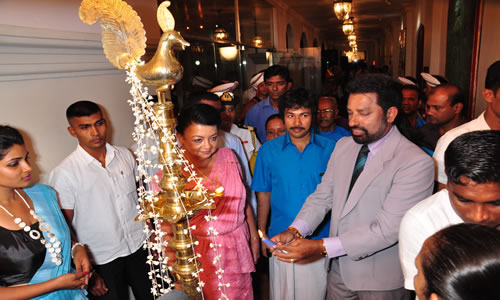

<div class="wrapper row3 animated fadeIn">
  <section class="hoc container clear">
    <div class="row">
      <div class="col-sm-6">
          <div id="myCarousel" class="carousel slide" data-ride="carousel">
            <ol class="carousel-indicators">
              <li data-target="#myCarousel" data-slide-to="0" class="active"></li>
              <li data-target="#myCarousel" data-slide-to="1"></li>
              <li data-target="#myCarousel" data-slide-to="2"></li>
            </ol>
            <div class="carousel-inner">
              <div class="item active">
                
              </div>
              <div class="item">
                
              </div>
              <div class="item">
                
              </div>
              <div class="item">
                
              </div>
              <div class="item">
                
              </div>
              <div class="item">
                
              </div>
              <div class="item">
                
              </div>
              <div class="item">
                
              </div>
              <div class="item">
                
              </div>
            </div>
            <a class="left carousel-control" href="#myCarousel" data-slide="prev">
              <span class="glyphicon glyphicon-chevron-left"></span>
              <span class="sr-only">Previous</span>
            </a>
            <a class="right carousel-control" href="#myCarousel" data-slide="next">
              <span class="glyphicon glyphicon-chevron-right"></span>
              <span class="sr-only">Next</span>
            </a>
          </div><br/>
          <iframe width="425" height="300" src="https://www.youtube.com/embed/nke6Uc0oGX4" frameborder="0" gesture="media" allow="encrypted-media" allowfullscreen></iframe>
      </div>
      <div class="col-sm-6">
          <h3>Introduction</h3>
          <p>
            AMARAKOON CULTURAL FOUNDATION was established at the early part of this year and was registered on 09th July 2013, with the Cultural Foundation under the Ministry of Cultural Affairs, Sri Lanka.
          </p>
          <p>This Foundation was established under the patronage of Sri Deshabimani Jayee Amarakoon, a popular artist in cinema field. On our first gathering our Chairman, Mr. Jayee Amarakoon explained his real motive to start this Foundation. As he had associate with many Artists during the past few years, he has seen the real difficulties undergoing by many senior artists, especially financially.</p>
          <p>
            If we recall the past, we certainly knows how our artists entertained us on Cinema, as well as on the Radio.
            The main purpose of this foundation is to help yesteryear Sri Lankan artists financially and also of other benefits. Not like the present generation, the yesteryear artists did not go behind financial benefits. They joined this trade only to entertain Sri Lankan people.
            From the start, from our first Sinhala Movie “Kadauna Poronduwa” upto latter part of 1980, the Sinhala Film Industry was very popular among Sri Lankans. We had participated in many International Film Festivals too and had the opportunity to win many International Awards. The reputation of our artists were very much high, because there only motive was to entertain people. If we go back to the past, we were on top of the map in the Music World also.
          </p>
      </div>
      <div>
        <p>
          Taking all these facts, all Sri Lankans will understand our real motive. The fact is, we have come to this world for a very short holiday. During this short period of time, we must live with a smile on our face. That is by enjoying every possible moment. Just think twice or more, who gave us this happy mood? Even after hard days work, the first thing we did was to run and switch on the Radio or to enter a Cinema hall. Just think again, who gave us the joyous moment. Its them. Now, the time has come to help them. We as Sri Lankans must get together and help these Yesteryear Artists.
          Proposed Facilities to Senior Artists
          Financial Facilities to upgrade their living standard.
          Distributing monthly dry rations.
        </p>
        <ul>
          <li>Medical Facilities</li>
          <li>Helping the dependents of senior artists</li>
          <li>Planned Events</li>
          <li>Fund raising projects to implement above</li>
          <li>Musical Evenings – with ever popular yester year Artists</li>
          <li>Media events also with them</li>
        </ul>
      </div><br>
    </div>
    <div class="row">
      <div class="card">
          <div class="card-block">
            <h1>අමරකෝන්  පදනමේ සංකේත ප්‍රතිපත්තිය</h1>
            <p>(1)වසර 23 ක කාලයක සිට කලා ක්ෂේස්තරයට ප්‍රවිෂ්ටව චිත්‍රපට සහ ටෙලිනාට්‍යයන් ගණනාවක් කරලියට පත් කර අතීවිශාල අත්දැකීම් රැසක් ලබා ඉදිරි අනාගතයේ කලා ශේස්ත්රයේ නියෙලි සිටි ගෙස්ට්ගේස්ට පුරවැසි කලාකරුවන් වෙනුවෙන් ඔවුන්ගේ යහපත උදෙසා මගේ නාමයන් පෙරටු කොට කලකේතයක් "අමරකෝන් සංස්කෘතික පදනම"යනුවෙන් පිහිටවා එය ක්‍රියාත්මක කරගැනීම මගින් මෙම භාරදූර කටයුත්ත සදහා පෙළ ගැසෙමින් සිටි.</p>
            <p>(2)මා උතුර නැගෙනහිර උධ බිමේ ශ්‍රි ලංකා පොලිස් ක්‍රියන්විත විශේෂ බලකායේ වසර 9 ක් වැනි කාලයක් සේවය කර ඉන් සමුගේන වැඩිදුර ඉගෙනිම සදහා අවකාශ රැසක් පෙළගැස්වුණ හෙඑන් එහි යාමට සිදුවිය.වසර ගණනාවක් එහි රැදිසිටි මා ලබාගත් ඉගෙනුමෙන් හා අත්දැකීම් තුළින් නියළී සිට නැවත සිය රටට පැමිණුනෙමි.</p>
            <p>(3)මේහි පැමිණ වැඩිකලක් යන්නට මත්තෙන් කලා කටයුතු  වලට සම්බන්ද  වීමට සිත්විය.ඒ අනුව මගේ අරමුණ වූයේ එදා පෝෂණය කළ රිදී තිරයේ නළු නිළි කැදැල්ල වෙනුවෙන් යම් ප්‍රතිලාභයක් ලබාදීමට හැකි වාතාවරණයක් ගොඩනගා ඔවුන් වෙනුවෙන් එය ක්‍රියාත්මක කරදීමඉ .එදා රිදී තීරයේ උචිත හැකියාවන් දැක්වූ මේ කලාකරුවන් අභිබවා ප්‍රේක්ෂක ජනතාවගේ නොමසුරු ආදරය දිනා ගනිමින් කළ කුසලතා සේවය ගැන අප ආඩම්බර විය යුතුය.එදා එසේ සිදුවුවත් අද පවතින තත්ත්වය දුක් ගැහැටය.</p>
            <p>(4)එම දුක් ගැහැට බදාගෙන ජිවත්වන ජෙෂ්ඨ පුරවැසි කලාකරුවන්ගේ වගතුග දැනගැනීම අරමුණු කොට දිගු ගමනක් මගේ හිත මිතුරන් කීප දෙනෙකු සමග ඔවුන් දැනට පදිංචිවී වී සිටින ඔවුන්ගේ වාසභවනයන් සොයා යාමට සිදුවිය.එසේ ගිය අපට දැකගැනීමටත්‍,ඇසීමටත් ලැබුණු තොරතුරු තුලින් ලද අත්දැකිම් සම්භාරය ලංකික ප්‍රේක්ෂක ජනතාවටත්;පාලන රජයටත් එළිදැක්වීමට අප පසුබට නොවෙමු.ජිවත් විම‍ට පවා නොහැකිව ඔවූන්ගේ ආරථික තත්වය අවම වී ඇත.රෝගී අවස්ථා වලදී අවශ්‍ය බේත් පවා ලබාගැනීමට හැකිවක් නැත.සමහර අයගේ විදුලි බිල පවා ගෙවාගැනීමට නොහෙකිව විදුලිය කප්පාදු කර ඇත.ඒ තරමටම අද ඔව්න් අසරණ වී ඇත.අති  විශාල ලාංකික ජනතාවක් රිදී තිරයේ එළිදැක්වූ එදා රංගන කුසලතා දස්කම් වලට ඇලුම් කල,ආදරය කල ප්‍රේක්ෂකයන් හැර ඔවුන්ට වෙන කාගේ පිළිසරණක්ද?යනු හැගීමෙන් මගේ හද පත්ලට සිතුවිල්ලක් ක්‍රියාත්මක කිරීම සදහා මා පෙර දැරි කරගෙන යන මේ ගමනට ඔවුන්   වෙනුවෙ අප කාගේත් සහයෝගය ලබා ගැනීමේ අවශ්‍යතාවය අමරකොන් සංස්කෘතික පදනම මගින් යථා කාලයේදී ජෙෂ්ඨ පුරවැසි කලාකරුවන්ට වාසනාවන්ත පිටුවහලක් වනු ඇත. මීට ඉහතදී පවා මේ අය වෙනුවෙන් සෑහෙන ප්‍රමණයක කෘත උපකාරවල් කර තිබීම ගැන මා සතුටුවෙමි.</p>
            <p>(5)මාගේ පව්ද්ගලික ධනය පරිහරණය කරමින් ජෙෂ්ට පුරවැසි කලාකරුවන් වෙනුවෙන් ඔවුන්ගෙ යහපත උදේසා ගොඩනැගුණු මෙම පදනම මගින් ඔවුනට මාසික දීමනාවක් ලබාදීමට රෝගී අවස්ථාවන්හීදී  අවශ්‍ය දේ ලබාදීමටත් ඊට අමතරව ඔවුන් ගෙන්වා රැක  බල ගැනීම සදහා වැඩපිළිවෙලක් ක්‍රියාත්මක කිරීමට නිවසක්  සොයමින් සිටින අතර අපගේ එම අදහසට කැමති ධානපතියෙක් වෙත්නම් අප හා එක්වන්න අවස්ථාව ලැබෙනු ඇත.ජනජිවිතයට අවශ්‍ය ප්‍රමුඛත්වය ලබාදෙමින් කටයුතු කිරීමට මෙම පදනම උත්සුක වනු ඇත. </p>
            <p>(6)අවබෝධයෙන් තොර,මුදලට වහල්වී කලාව වීනාශ කරමින් නැටුම් නටන නුතන කලාකරුවන් ගැන දෘෂ්ටිකෝණයෙන් බලන කල අපට පෙනී යන්නේ එදා සිටි ජෙෂ්ට පුරවැසි කලාකරුවන් අභිබවා යාමට හැකිවේද යනු පැනයකි.</p>
            <p class="warnings">ජීවත් වීමේදී මේ  අසරණ ජෙෂ්ට පුරවැසි කලාකරුවනට උදව් උපකාර කරනු වීනා මරණයේදී වැණුම්  කිම කාලකන්නියන්ගේ පිලිසරණකි.නැතහොත් නැහැදිච්චකමකි.මේ අමරකොන් සංස්කෘතික පදනමින් ශ්‍රී ලාංකික ජනතාවට දෙන ප්‍රථම අවවාදයි</p>
          </div>
      </div>
    </div><br>
    <div class="row">
      <h1>About Programme</h1>
      <p>
        Sri Lankan cinema encompasses the films made in Sri Lanka. It is a fledgling industry that has struggled to find a footing since its inauguration in 1947 with Kadawunu Poronduwa produced by S.M.Nayagam of Chitra Kala Movietone. Sri Lankan films are usually made in the Sinhalese language, the language of the majority Sinhala people.
      </p>
      <p>
        Amarakoon Culture Foundation is the  non-governmental organization in the country that 
        provides financial and logistical support to the Oldest Sri Lankan Artiste in  
        the field of culture, art, science and education, and promotes the 
        development of their daily life when unable to work as Artiste due to the Overage. 
        Foundation operates in Colombo, as well as through branches and representative 
        offices in Sri Lanka and abroad. The activities of the Fund are divided into central, 
        regional, international. In 2013 the Foundation carried out targeted activities in eight major 
        areas
      </p>
      <h1>Message by Ven Watinapaha Somananda Thero</h1>
      <p>
          My great well wishes and greetings will be commence for the Founder of Amarakoon Cultural Foundation Chairman MR.Jayee Amarakoon . In respect of this , I assure that their ability will proceed with great  success by achieving respect for giving regards to popular oldest Cinema Artiste and popular Singers in Sri Lanka.
      </p>
    </div><br>
    <div class="row">
      <h1>Our Members</h1>
      <div class="col-sm-4" *ngFor="let member of teamMemebers">
        <article>
          <br>
          <span><b>{{member.name}}</b></span><br>
          <span><b><i class="fa fa-user"></i> {{member.possition}}</b></span>
        </article><br><br>
      </div>
    </div>
  </section>
</div>